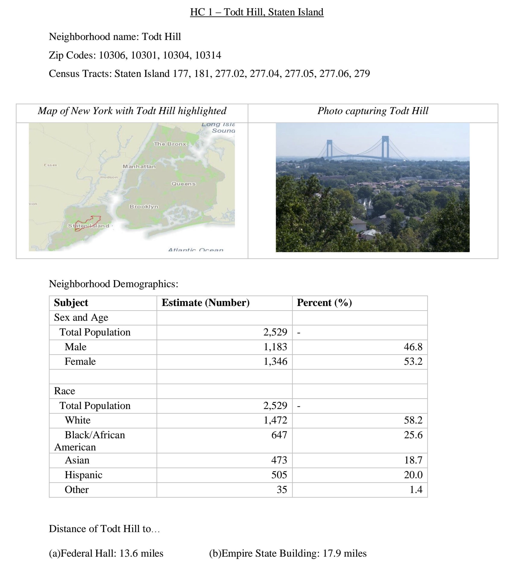
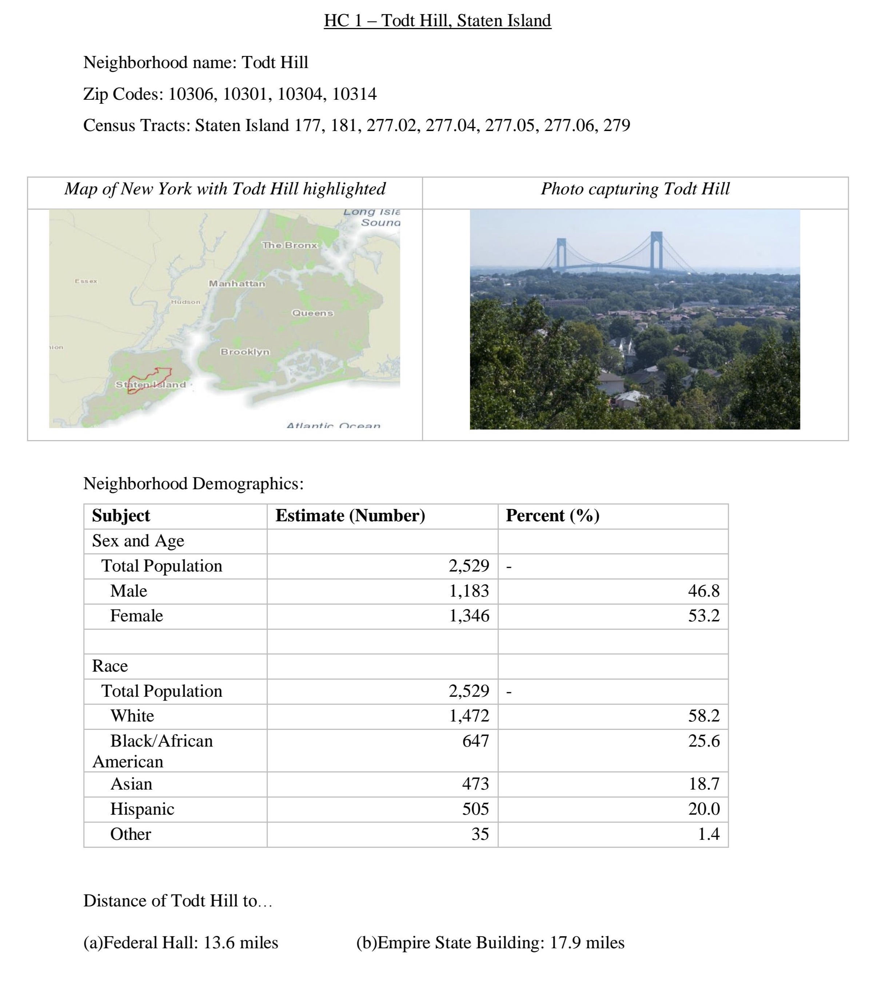

Submit the following programs via the honors section of Gradescope:
- HC 1: Favorite Neighborhood Due Date: 9 February
Throughout the semester, we will focus on neighborhoods in New York City. To start this off, pick a neighborhood (e.g. one you live in, have lived in, like visiting). Create a single page summary of your neighborhood that includes:
- Name of the neighborhood (include in the title),
- The zip code(s) of your neighborhood,
- The census tracts encompassing your neighborhood (see Census Tract Finder),
- A map of New York City with your neighborhood highlighted,
- An photo or image that captures your neighborhood,
- The demographics of your neighborhood, and
- The distance of your neighborhood to Federal Hall and to Empire State Building.
Note: upload a .pdf to the assignment HC 1. in the honors section of Gradescope. Unlike the Python code, it is not automatically graded.
- HC 2: Neighborhood Rankings: Due Date: 16 February
Working in pairs or triples, design a ranking for most desirable features of a neighborhood.
There are multiple rankings of New York City Neighborhoods. For example,
- Niche,
- DNA Info's rankings,
- Brick Underground,
- Curbed's Walkable Neighborhoods,
- BuzzFeed,
- Street Advisor
- Assess what these rankings have in common and how they differ.
- Which ranking do you favor and why?
- What qualities make a neighborhood desirable place to live?
- Collate a list of the three most important.
Submit a .pdf file containing your assessment of the rankings and the three most desirable qualities. You should use complete sentences, compare and contrast the rankings above, and justify the three qualities that your group thought most important.
- HC 3: Neighborhood Density & Zoning Due Date: 23 February
The final presentations will focus on:
Mayor De Blasio wants to add 300,000 housing units to the city. Where and how many could go in your neighborhood? What extra services (e.g. transit and roads, schools, emergency services) would be needed to accommodate the increased population?
Over the next couple of weeks, we will introduce Python programming tools to analyse and map the large data sets available from NYC.
Before we do that, we will start by examining characteristics of your neighborhood. For this assignment, submit a single page (.pdf file) containing the following information:
- The name of your neighborhood (include in title) and a small map of New York City with your neighborhood highlighted (from the first assignment).
- How many people live in your neighborhood? One way to estimate this number is to use 2010 Census Data for the census tracts you identified in the first assignment and use NYCityMap.
- What is the density of your neighborhood? Use the census tracts (from first assignment) with the NYC Population Density to answer the question.
- Has your neighborhood become more or less dense over time? Include data to support your answer.
- What is the zoning of your neighborhood? What are the tallest building allowed? What is the predominant zoning designation? What does it allow? Helpful tools for this include the city's zoning map and zoning explanations.
Submit a .pdf file analyzing the density and zoning of your neighborhood. You should use complete sentences and justify your answers with data from the readings.
- HC 4: Cost of Commuting
Due Date: 2 March
FiveThirtyEight analyzed the cost of commuting in terms of the extra New Yorkers were willing to pay to lessen their commute. StreetEasy did a similar analysis, measuring from given subway stops (and includes a lovely Tableaux map-- scroll down).
Is this true for your neighborhood? To narrow down the analysis, we will focus on the distance to two landmarks: Empire State Building (as a proxy for midtown) and Federal Hall (for the financial district). You may find WNYC Transit Time or Google Maps useful, as well as CityMapper.
- In your neighborhood, what is the longest commute driving to the Empire State Building or Federal Hall? Assume that you are arriving at 8:30am on a weekday.
- In your neighborhood, what is the longest commute by public transit to the Empire State Building or Federal Hall? Assume that you are arriving at 8:30am on a weekday.
- In your neighborhood, what is the shortest commute driving to the Empire State Building or Federal Hall? Assume that you are arriving at 8:30am on a weekday.
- In your neighborhood, what is the shortest commute by public transit to the Empire State Building or Federal Hall? Assume that you are arriving at 8:30am on a weekday.
Do the prices in your random sample match what FiveThirtyEight found? Justify your answer.
Submit a .pdf file analyzing the time and cost of commuting of your neighborhood. You should use complete sentences and justify your answers with data.
- HC 5: Walking in NYC Neighborhoods
Due Date: 9 March
Urban planner, Jeff Speck, argues that if a city succeeds at being walkable, it excels at having a high quality of life (see his TED talk).
Analyze his argument in terms of five neighborhoods in New York City and the ranking you determined in HC 2. For five of the neighborhoods chosen by class (1-page summaries from HC 1 are available on Blackboard), determine the following:
- Rank the five neighborhoods by your ranking from HC 2. Explain how you determined the neighborhoods ranked (you can have ties, but you need to justify the rankings, even in the case of ties).
- How did the 5 neighborhoods do in terms of walkability (order the neighborhoods by their walk scores).
Does your ranking concur with ranking the neighborhoods by walkability? Justify your answer.
Submit a .pdf file analyzing the your rankings and walkability of five neighborhoods chosen for the class. You should use complete sentences and justify your answers with data.
- HC 6: Neighborhood geoJSON Map
Due Date: 13 March
Using the geoJSON mapper (see geoJSON notes), make a JSON file that includes the following features:
- your neighborhood marked as a region (e.g. polygon),
- major transportation corridors (e.g. subway lines, major bus routes, or major roads) marked as lines, and
- three landmarks, marked as points (can be 3 points that are important in general or important to you).
Commit to github, and view using the github preview button (you should see you encoding rendered graphically on a map).
Submit a screenshot of your map as a .pdf file.
- HC 7: Vegetation and City Temperature
Due Date: 30 March


How linked are vegetation and temperature in the city? Researchers used NASA's Landsat satellite data to make maps of vegetative cover and temperature on an extremely hot day (12 August 2002).
Working in teams of up to three people, compare these two images to answer the question. Include in your submitted work:
- what techniques you used to compare the vegetative and temperature data,
- images or graphs to support your conclusions, and
- a paragraph summarizing your results.
Some things that might be useful:
- The change in vegetation is primilarily on the green channel of the image (similarly the change in temperature is encoded on the blue channel).
- To make an array that has only the green channel of the numpy array vegImg, you could type: grChannel = vegImg[:,:,1].
- To compare the individual points of each, you may want just a list of all the values (in the same order for both). There's a function, flatten() that will take arrays (for example the grChannel) and make a very long array (DataCamp's tutorial on numpy).
Submit your answer as a .pdf file.
- HC 8: Neighborhood Services Due Date: 13 April
In Lab 7 (19 March), we introduced NYC OpenData, and in Lab 8 (26 March), we explored binning data.
Using the programming techniques developed there, determine what were the 10 most pressing complaints to the 311 in your neighborhood last year (focus on a single zip code and filter the date to be only 2017 to limit the size of the data set).
Also, include a tally of the number of complaints by agency (that is, how many were for DOT, how many were for NYPD, etc.). A useful command is count_values()
Since the code is very similar to the labs, submit only a .pdf file that contains:
- The top 10 311 "Complaint Type"s for your favorite neighbohood, and
- The counts, by agency, of the complaints.
Submit your answer as a .pdf file.
- HC 9: Webpage Due Date: 13April

 

We are going to be using github to make webpages for your projects. There will be only one site for each project, but we want everyone to set up there own page as a warm-up exercise.
Create a github page for your neighborhood.
- If you haven't done so already, set up a repository for your neighborhood project (see the getting started tutorials from Lab 8 on how to set up a repository).
- Follow through the options for setting up a page for your project (right under the "Ready to get started?).
- Include on your neighborhood page:
- the name of the neighborhood,
- the outline of the neighborhood (the .json file you created in the previous classwork for HC 6),
- the basic demographics & statistics from the HC 1,
- the biggest 311 complaints from HC 8
Submit a .pdf file that contains the URL of your project on github (web address) and a screenshot of your project.
- HC 10: Neighborhood Services MapDue Date: 16 April

Focusing on the top complaint for your favorite neighborhood in 2017, make an HTML map of where the complaints occur (see Lab 9 (9 April) for details on making maps).
Since gradescope does not accept .html files, include a link to your map on the webpage you created for HC 9.
Submit a .pdf file that contains an image of your map as well as the URL of your webpage that includes the interactive map you created.
- HC 11: Project PlanDue Date: 20 April
The honors section will have final presentations on 15 May, addressing, the following:
Mayor De Blasio wants to add 300,000 housing units to the city. Where and how many could go in your neighborhood? What extra services (e.g. transit and roads, schools, emergency services) would be needed to accommodate the increased population?
You may work in teams of up to 3 students to develop your presentation, which has 2 parts:
- A 60-second lightning presentation (upto 2 slides) that contains who is on the team, the neighborhood you chose, and a brief description of your solution to how much additional housing, and what additional services would be needed, and
- A computer "poster" (aka a github site) consisting of a website with a description of your neighborhood, an analysis of where additional housing could go, and details about the additional services.
For this group assignment, include in a .pdf file:
- The neighborhood that your team has chosen,
- The names of the team members,
- A rough estimate of where additional housing may go in your chosen neighborhood and type (for example: replacing existinghousing with larger buildings, adding housing on vacant or under-built land, such as parking lots, or in-fill housing), and
- A paragraph outlining what services your neighborhood may need to absorb additional housing units.
- HC 12: Revised Zoning MapDue Date: 27 April
We can use the city data to create a zoning map highlighting features. The above map shades regions based on a value (these are often called choropleth maps), with the regions being zoning districts and the coloring based on whether the district is primarily residential, commercial, or manufacturing.
The map was created with files from the city, augmented by adding an unique ID for each region, so, we could line up the geometric region with the zoning information (see details). The underlying files are:
- zoneMap.py which creates an HTML map using the data files,
- zoningIDs.json which contains the geometry/shapes of the zoning districts (with unique IDs added), and
- zoneDist.csv which has the districts with zoning designation.
- commercial and manufacturing (all non-residential zones) are marked as yellow (or, if you hate the current color scheme, the lightest color in your chosen color map).
- all regions that are low density (R1, R2, R3, and their variations in the NYC zoning) are orange.
- all regions with medium to high density (all other residential zoning designations) are red.
Modify your program to make a second map where low and medium density housing are orange and only high density (R8, R9, and R10) are red.
Submit a .pdf file with a screen capture image of your first HTML map (grouping together medium and high density) and your second HTML map (separating out high density) zoning.
- HC 13: Project Webpage Due Date: 2 May
Submit the URL of your group presentation (the two slides for the presentation) as part of a .pdf file. If you have plans to add more to the website, include in the .pdf file any changes you have planned but didn't have a chance to enter yet.
- HC 14: Draft Presentations Due Date: 4 May
Submit the slides of your group presentation (two slides) as a .pdf file. Your slides should include who is on the team, the neighborhood you chose, and a brief description of your solution to how much additional housing, and what additional services would be needed.
- HC 15: Feedback Forms Due Date: 7 May
(This is included for completeness, since the forms will be passed out and returned in section on 7 May. After you have commented on others group presentations, we will distribute the forms, so that groups can use these to improve their slides and webpages for the final presentation the following week. )